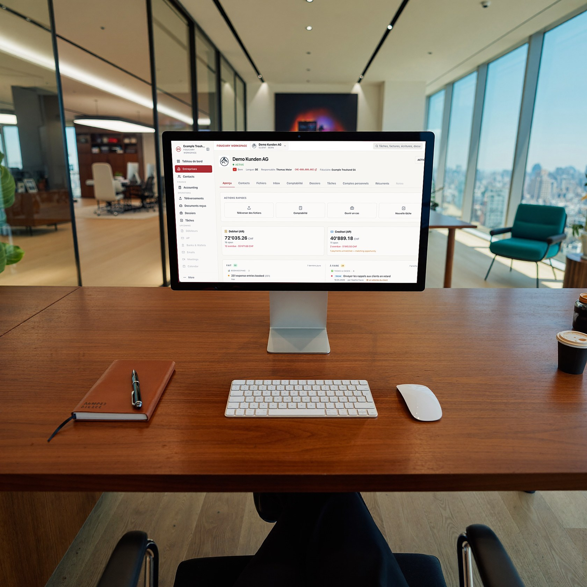

Les meilleures fiduciaires de Suisse— de la start-up à 250 employés
Nous collaborons avec des fiduciaires AI-native de premier plan en Suisse alémanique, romande et italienne. Pour les petites entreprises — une fiduciaire toujours à portée de main. Pour les plus grandes — un back-office financier complet, géré par votre fiduciaire, sans service financier interne.

Comme engager un directeur financier — sans son salaire
Une fiduciaire moderne de notre réseau ne se limite pas à tenir les comptes. Elle gère votre back-office financier de bout en bout, en temps réel. Que vous ayez 0 ou 250 employés, vous disposez de la fonction financière d'une entreprise bien plus grande — sans avoir à la construire.
Bien plus que la comptabilité
Chaque fiduciaire du réseau s'en charge pour vous — sous son propre nom :
Débiteurs
émission et gestion des factures clients
Banque & caisse
comptes et caisses maîtrisés
Créanciers
factures fournisseurs et paiements, avec validation finale toujours entre vos mains
Saisie automatique des pièces
justificatifs collectés directement des caisses et des POS
Temps & salaires
suivi du temps de travail et calcul des salaires
Chiffres en temps réel
bilan et compte de résultat, en direct, quand vous en avez besoin
Conçu pour toutes les tailles
Petite entreprise
Cessez de tout faire vous-même et tournez la page d'une fiduciaire lente et sur papier. Une fiduciaire AI-native tient vos comptes à jour — sans augmenter vos effectifs.
Moyenne & grande entreprise
Ne montez pas tout un service financier. Une fiduciaire du réseau vous donne un back-office AI-native complet qui évolue avec vous — pour une fraction du coût d'une équipe interne.
De meilleures finances, à moindre coût
Pour les petites et moyennes entreprises, une fiduciaire de notre réseau coûte moins qu'une fiduciaire traditionnelle. Pour les plus grandes, c'est une fraction du coût d'un comptable ou d'une équipe financière interne. Vous obtenez plus — visibilité en temps réel, automatisation, vision de directeur financier — et payez moins que l'alternative.
Ce qui en fait les meilleures
« Les meilleures », ce n'est pas un slogan — c'est une liste de critères. Chaque fiduciaire du réseau répond à cinq conditions vérifiables :
01Une comptabilité en temps réel.
Les écritures sont passées au fur et à mesure de l'arrivée des documents — pas une fois par trimestre. Vous voyez le bilan, le compte de résultat et la trésorerie d'aujourd'hui, pas un rapport sur le passé.
02Chaque chiffre rapproché des pièces.
Relevés bancaires, caisses et factures sont rapprochés au centime près. Derrière chaque écriture, il y a une pièce justificative.
03Un portail client à la marque de votre fiduciaire.
Envoyez vos documents depuis votre téléphone en quelques secondes ; suivez l'état de vos comptes et de vos paiements à tout moment. Fini la boîte à chaussures de justificatifs en fin de trimestre.
04Hébergement suisse, protection des données suisse.
Les données sont stockées en Suisse, traitées conformément à la nLPD et archivées pendant 10 ans (art. 958f CO).
05Une plateforme, un standard.
Le réseau réunit des fiduciaires sélectionnées par Arvut et travaillant sur une même plateforme de production — avec les mêmes exigences de précision et de délais.
FAQ
Combien ça coûte ?
Vous convenez des honoraires directement avec votre fiduciaire — ils dépendent du volume et de l'étendue des travaux. La mise en relation par Arvut est gratuite et sans engagement.
Dans quels cantons et quelles langues travaillez-vous ?
Dans toute la Suisse. Les fiduciaires du réseau travaillent en français, allemand, italien et anglais — nous vous proposons celle qui parle votre langue et connaît la pratique de votre canton.
Nos données sont-elles en sécurité ?
Les données sont hébergées sur des serveurs en Suisse et traitées conformément à la nLPD. Les documents comptables sont archivés pendant 10 ans, comme l'exige l'art. 958f CO.
Nous avons déjà un comptable ou une fiduciaire. Le changement est-il compliqué ?
La transition est prise en charge par votre nouvelle fiduciaire : historique, soldes d'ouverture et factures ouvertes sont repris. Vous continuez à travailler sans interruption — pas de retour à zéro.
Pourquoi ne publiez-vous pas la liste des fiduciaires ?
Parce qu'une mise en relation ciblée vaut mieux qu'un annuaire. Nous tenons compte du canton, de la langue, du secteur et de la taille de votre entreprise — et nous vous présentons directement la fiduciaire qui vous correspond.
Nous vous mettons en relation avec la bonne fiduciaire
Nous ne publions pas la liste ouvertement. Vous nous contactez directement — et nous nous chargeons de la mise en relation.
Vous nous contactez
écrivez-nous ou réservez un appel.
Rencontre & démo en direct
nous montrons comment cela fonctionne sur des cas réels et examinons votre situation.
Nous vous orientons vers un partenaire
selon votre canton, votre langue et votre taille, vers la fiduciaire adaptée de notre réseau.
Chaque fiduciaire du réseau est sélectionnée, AI-native et Arvut-powered. Reporting en temps réel · hébergement suisse · conforme à la nLPD.
On commence ?
Réservez une démo — ou écrivez-nous simplement. Nous ferons connaissance, vous montrerons le système et vous orienterons vers la fiduciaire adaptée.

Nous utilisons les données du formulaire uniquement pour répondre à votre demande. Protection des données
Ou directement : calendly.com/arvut · fiduciaires@arvut.ch